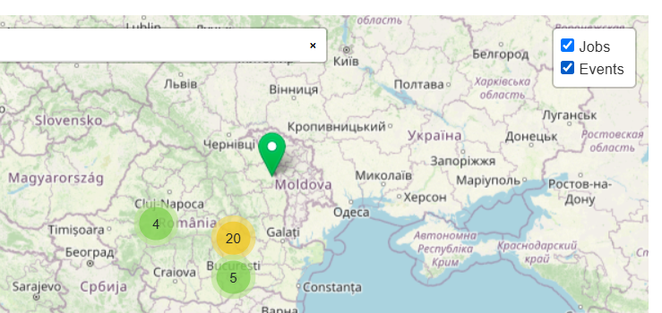
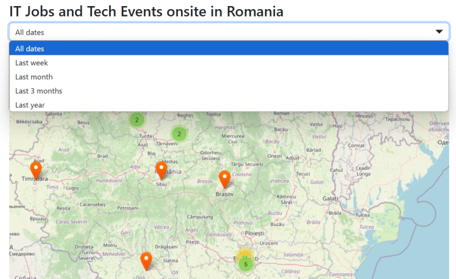
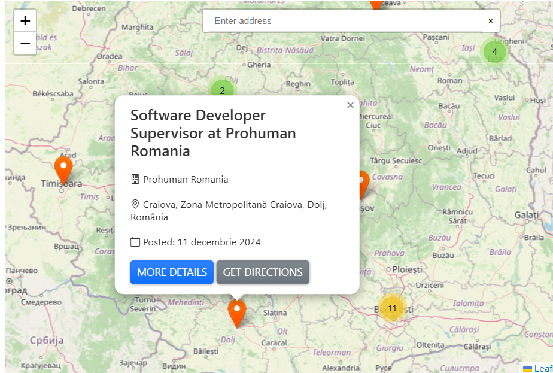
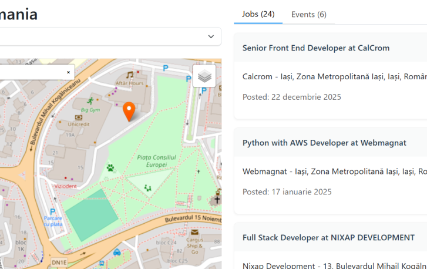

The app offers an intuitive design and easy navigation, making it simple to explore IT-related events
and onsite job opportunities. With powerful filtering options, insightful event statistics, and an
interactive map, Job Hunter empowers job seekers to find their dream job and events.
Map Page
Users can visualize IT job openings on a map, helping them identify job opportunities based on location.
Filters allow job seekers to refine results based on experience level, employment type, and remote/in-office jobs.
The users can navigate on the interactive map page, where they can select between jobs and events, or both, which means that the location of the selected category will be
displayed on the map.

Fig. Select Jobs or Events
A user can choose a date interval for events and jobs he want to see on the map.

Fig. Select Jobs or Events
Clicking on job markers provides details like company name, employment type, and direct application links.
When a user clicks on a marker, a popup appears with details such as:
For job postings: Company name, job title, location, employment type, and a link to apply.
For events: Event name, date, location, description, and a registration link.
Users can take actions like saving a job, registering for an event, or applying for a job directly from the popup.

Fig. Job markers
Users can discover IT-related events such as conferences, hackathons, and meetups in their area.
Clicking on event markers shows event details, including date, topic, and related job opportunities.
Employers can analyze job distribution across different cities and optimize hiring strategies.
HR professionals can track the availability of skilled professionals in various locations.
Recruiters can see what types of events are happening and plan sponsorships or participation.
The map is populated with markers representing job openings and IT-related events.
Different icons or color-coded markers differentiate between:
Job postings
IT Events (Conferences, Meetups, Hackathons)
Users can zoom in and out to explore different regions.

Fig. Details about the job, also the possibility to zoom in
Event Statistics Page
The EventStatisticsPage component is a data visualization page that presents event-related statistics using various charts and graphs.
Fig. Pie chart on the number of events by type and pie chart on the number of events online vs offline
Fig. Bar chart on the number of event per topic
Fig. Bar chart on the number of events per technical skill
Fig. Calendar Heatmap on the density of events
Search Event Page
The Event Search Page allows users to search and filter IT-related events. Users can apply filters such as event type, topic, location, online status, and date.
In the example below, we can see how the search results are displayed based on the selected filters:
For case 1 the user only selected the type of events, in the case 2 the user selected both type, topic, and location, in the case 3 the user selected type, topic and a date.
Fig. Search Event Case 1
Fig. Search Event Case 2
Fig. Search Event Case 3